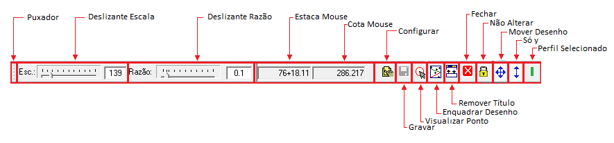

Barra de Ferramentas
BARRA DE FERRAMENTAS:

São os seguintes os botões da barra de ferramentas do desenho dos perfís geológicos:
Puxador:
Usado para reposicionar a barra de ferramentas. Mantenha o botão direito do mouse pressionado enquanto o move. A barra acompanhará os movimentos do mouse. Caso queira atracar a barra novamente, basta arrastá-la para sua posição original.
Deslizante Escala:
Este Deslizante deve ser usado ao se desejar mudar a escala do desenho. Opcionalmente pode-se digitar diretamente o valor da estaca na caixa de edição. Este valor pode variar entre XXX e YYY .
Deslizante Razão:
Este Deslizante deve ser usado ao se desejar mudar a razão entre as escala x e y. Geralmente esta razão é 0.1. Opcionalmente pode-se digitar diretamente o valor da estaca na caixa de edição. Este valor pode variar entre XXX e YYY. Deve-se ter bastante cuidado ao usar este deslizante pois pode tornar o desenho muito confuso.
Estaca Mouse:
Este campo indica o valor da estaca onde o mouse se encontra.
Cota Mouse:
Este campo indica o valor da cota onde o mouse se encontra.
Configurar:
Este botão chama o Diálogo de Configuração do Desenho do Perfil Geológico. Neste diálogo configura-se como e o que será apresentado no desenho.
Gravar:
Este botão Grava o estado atual do perfil geológico. Fica indisponível caso não tenha havido alterações no perfil geológico deste da ultima gravação ou da inicio da edição atual.
Ir Para Ponto:
Use este botão para visualizar um determinado ponto, surgirá um dialogo onde devem ser inseridas a estaca e a cota do ponto que se deseja visualizar.
Enquadrar Desenho:
Este botão faz com que todo o projeto geológico seja mostrado na tela. Posteriormente pode-se selecionar uma janela de visualização ou aumentar a escala através do botão de rolamento do mouse ou do deslizante de escala.
Remover Título:
Para um maior proveito da área da tela pode-se remover a barra de título da janela do desenho através deste botão. Caso seja pressionado novamente a barra de título reaparecerá.
Fechar:
Caso a barra de título tenha sido desligada e não esteja aparecendo use este botão para fechar o desenho.
Não Alterar:
Este botão impede que se faça alterações no desenho. Por segurança deve ser usado quando os perfís geológicos estiverem definidos. Sim para pressionado, não para não pressionado. Caso este botão esteja pressionado não será permitida nenhuma alteração nos perfís. Esta fato ficara caracterizado pela apresentação do símbolo de proibido no ícone do mouse ao se tentar fazer alguma alteração.
Mover desenho:
Este botão quando pressionado evita que se arraste o desenho ao se clicar no fundo.
Só y:
Quando pressionado este botão evita os movimentos do perfil no eixo x, permitindo movimentos apenas no eixo x. Muito útil quando se deseja colocar um perfil em baixo de outro perfil, que ocorre na maioria das vezes ao se copiar um perfil.
Perfil Selecionado:
Este botão mostra a cor do perfil que esta atualmente selecionado. Quando clicado desceleciona o perfil.
Direitos Autorais © (2010 - 2015) - Boole Software LTDA - Todos os direitos Reservados.
Created with the Personal Edition of HelpNDoc: Create cross-platform Qt Help files